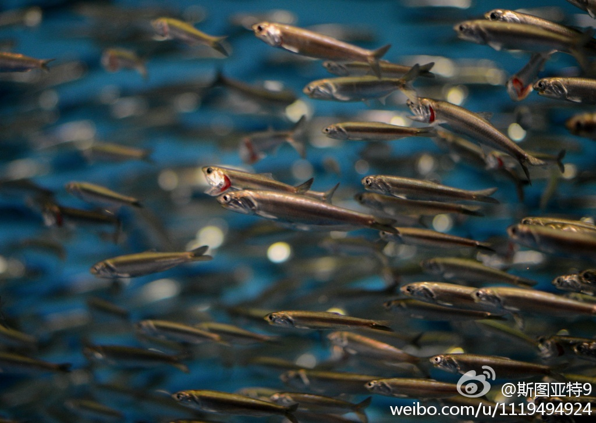

//@潘震皓: 转发微博@娱大圣:"An apple a day，keeps doctor away"怎么翻译？ 四十岁的人翻译：日食一苹果，疾病莫缠我。 三十岁的人翻译：每天玩iphone， 博士毕不了业。 二十岁的人翻译：一天听一遍小苹果，医生都不敢来治我。
今天早上堵在湾区的101高速公路上的时候，我就在想：那个水缸里至少不会堵车，想游多快就游多快。@斯图亚特9:昨天在水族馆，一个圆柱形水箱里，无数这样的鱼沿着水箱的玻璃无休止的转圈游着。听见旁边有一个游客对旁边的同伴说：“他们的一生就是这样的吗？”旁边的朋友回答说：“是啊。就像在纽约一样。” 